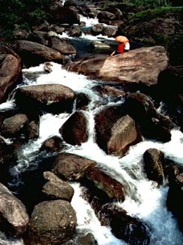
漓江之源与湘江之源同出于桂林市兴安县境内海拔两千多米的越城岭主峰猫儿山，在猫儿山上生长着千余株“活化石”--银杉，弥足珍贵。
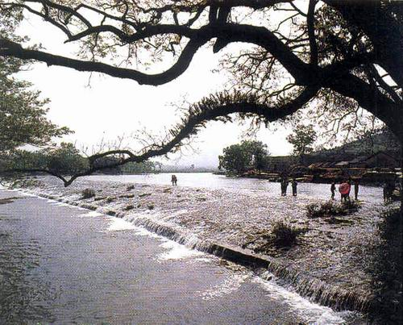
兴安县境内的灵渠建于秦始皇三十三年，沟通了长江水系和珠江水系，是我国古代四大水利工程之一，将军史禄因督造此渠而千载留名。
初次到灵渠，是还在育幼院里时，集体到这里春游。童稚的双眼，唯一记得住的，是运河两岸的桃花。之后十数年间我又去了两次，但却再找不见记忆中的桃花了，也许是景物在变化，但也许是人心变化得更大些，天若有情天亦老，草木无情，年年春华，它们又何来的什么变化。
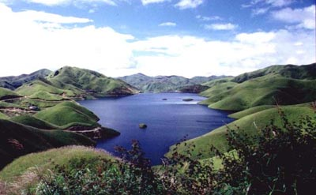
全州县的天湖与长白山天池倒有些相仿，只是少了白头，多了些绿草。天湖水电站，落差上千米，是亚洲第一高水头电站。在桂林境内的南岭群山中穿行，经常会看到利用落差水能发电的小型电站。
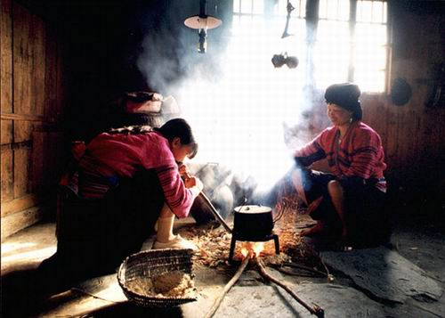
桂北民居别具地方特色，多为木结构的“干栏”式建筑，小青瓦坡屋顶，木楼两端一般都有偏厦，形成中间高，两边低的立面效果。火塘在桂北民居中占有重要的地位，“火”是侗、壮等民族的崇拜物，终年不灭。家人和客人围着火塘就餐、歌唱、聊天。
退回二十余年，在我爷爷奶奶的家里，也有这么一个火塘，永远烧着一釜热水。每每记得冬日的夜晚，很多的人聚在火塘边，火光映在大家的脸上，红扑扑的，在那欢歌笑谈中哪怕是深雪的日子也不会感到寒冷。现在爷爷奶奶早已经一起在一个高山的地下，那个火塘也早已荒废，再没有火光从那里出来映在谁的脸上。
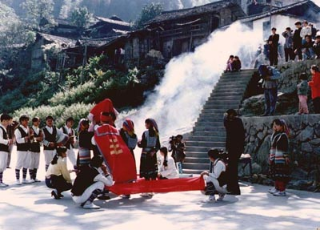
这是龙胜县龙脊一带壮族结婚时背新娘的场面。桂林地区壮、汉、瑶、苗、侗等各族杂居，民族风俗多种多样，比如壮族传统歌节“三月三”时的抛绣球，侗族传统民俗节日花炮节的抢花炮等等。最有意思的是“走寨”，在有月光的晚上进行，故又称“踩月亮”。每当月明之夜，小伙子们三五成群，弹琴吹箫，走村串寨，找姑娘们对歌、闲聊。姑娘们则三三两两聚在某家木楼，纺纱织布，说说笑笑。听到小伙子走寨的琴声，说笑停止，只有纺纱车在不停地转。小伙子听到纺车知道姑娘们在等待，便轻轻地走上楼，坐在火塘边弹琴吹箫，姑娘们和唱。如果双方有意，就单独对唱，直到雄鸡三唱，东方既明。
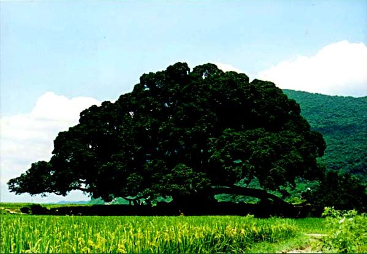
因为刘三姐和阿牛的定情，使那株枝繁叶茂的大榕树也成了阳朔著名的一景，商业的气氛已经改变了他，夺走了他的田野朴质之美。
其实桂林最多的不是桂树，而是这盘枝错节的榕树，桂林的别称是叫做“榕城”的。除了阳朔城边的那株，城里榕湖边古南门前面的榕树也值得一看。古的时候，天下知名的西湖一共有三十六处，桂林的西湖是其中面积最大的一个，也就是《山海经》里说过的那个“南有大泽”，桂林西湖上来往的舟楫，就在古南门前榕树下停靠。榕湖边上的系舟亭，就是为了纪念千年前一位路过泊舟的宋代诗人。
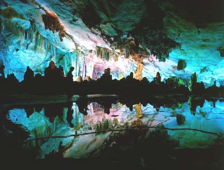
被称为“大自然艺术之宫”的芦笛岩在市郊光明山上。早在唐代，这里就已经是个很有名的游览胜地了，在洞内发现的年代最早的题字，出自唐初一位周游全国各地的名僧。宋代以后，因为附近的村民利用这里来躲避战乱兵匪，于是这里被遮蔽起来，终于渐渐不为人知。芦笛岩的重新发现和开发，其实并不很久。
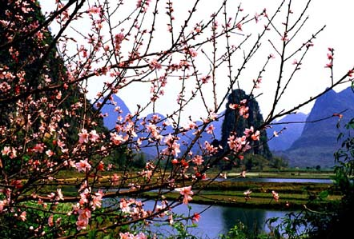
桂林有好些地方可以看桃花，尧山下的桃林和骆驼山下面那一大片都很好。桃花江的两边，自然少不得也有些疏落的桃花，家离桃花江不是非常远，有时候会和老爹一起去江畔钓鱼；也有时候我一个人去，半天或者一天，在江边树荫下看书。有次拿的是一本马茂元先生注的楚辞，明明是春天，却赫然看到书上写着，“悲哉秋之为气也！
原来桂林的机场是在奇峰镇，军民合用，后来市政府利用抗战时陈纳德飞虎队的两江基地建成了两江国际机场，奇峰镇机场就转为军用机场了。奇峰镇的驻军是罗盛教生前所在部队，清明节我们会去那里为他扫墓。
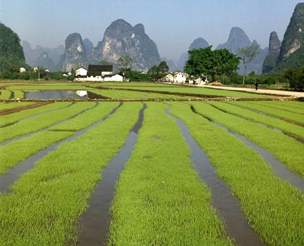
桂林境内的农作物绝大部分是水稻，农人会在水稻田里放养群群鲤鱼，它们一来可以吃掉田里的害虫，二来长成之后就是有名的桂北禾花鱼，和上山中酸笋和辣椒，就是桂林人桌上一道佳肴了。
十多年前桂林的夜市小吃摊子上，最让人留连的是田螺和米粉，并不明亮的马灯下，好像总是有那么多不夜归的人们。过去的岁月总是牵引人的遐思，那失去了的，永不再来的，却总是让人一遍又一遍的去想着它。
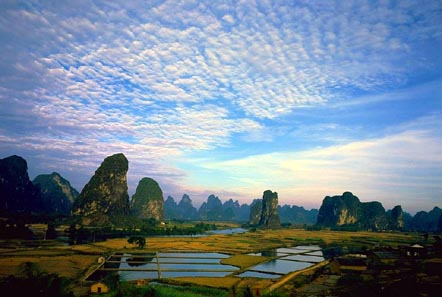
有心人总是可以留意到天空云彩的变幻之美，运气好的话，还能见到雨后天空巨大的虹，仿佛通往天国的桥。
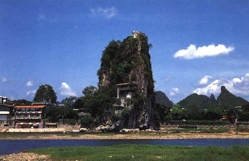
解放桥至伏波山段的江面，向来是天然的泳场。每到夏天，在这里游泳的人非常多。常有人问我，为什么自小生长在漓江岸边，却不怎么会游泳。其实这答案非常简单，因为漓江每年都要带走好些小朋友的生命，从小家里就不让下水的那些桂林人，当然不大会；而另一些经常由家长带着游泳的，就是水乡的健将了。伏波山下有个还珠洞，因诚实的渔童在此归还龙王宝珠的传说而得名。
伏波山左边是靖江王城里的独秀峰。南朝刘宋景平二年，颜延之来到桂林任始安太守，常在峰南麓读书，“未若独秀者，峨峨郛邑间”，至今桂林仍有他的名篇刻石《五君咏》。徐霞客来的时候，曾经多次上书，请求进入王府登上此峰，为此还特意在桂林勾留经月，但终未如愿，郁郁而去。
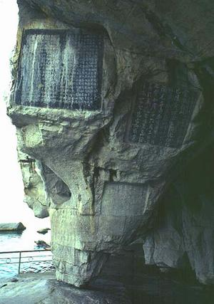
还珠洞里有一块试剑石，传说伏波将军马援南征时过此，运剑将石柱劈断，将军神力，竟然如斯！传说当然只是传说，但马援却的确是个真英雄，他那番关于男儿当建功于边野，马革裹尸以还的名言，和他言出必践的生平，尽显大丈夫的气概，堪与闻鸡起舞，渡江击楫的祖逖，和“知不可为而为之”而北上击胡的悲剧英雄刘琨相比。
梁漱溟是桂林人中少有的学问大家，游历了大半个中国之后，最终埋骨于故乡穿山脚下。他是蒙古皇族的后裔，非常有意思的是，南宋的第一个皇帝赵构，和灭亡南宋的元朝的最末一个皇帝脱欢帖木耳，在登基之前，都是在桂林做藩王。与桂林颇有渊源的还有梁羽生，他在桂林读书，度过了整个的青少年时代，也许是因为难忘这段少时生活，在他的一些武侠小说里，若隐若现地还能看到桂林山水的影子。
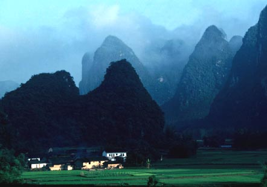
旧中国的军阀里，有两派军阀始终没有被蒋介石彻底打垮，其一就是李宗仁、白崇禧为首的桂系军阀。李、白两人的故居都在桂林市临桂县境内，两人陆军学堂出身，乱世中击溃老牌军阀陆荣廷，就此纵横中国历史舞台数十年，有位桂林作家据此写了一部《桂系演义》，销量还不错。白崇禧之子白先勇是台湾著名的作家，郑裕玲主演过根据他的小说改编的电影《花桥荣记》。
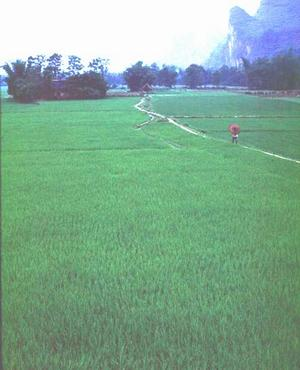
游桂林时，不要怕遇到雨天。遇着了反倒应该高兴，烟雨漓江才真正体现漓江之美，也更符合我们中国人的审美精神。在戴望舒的巷子里，如果没有了雨的元素，那么那位丁香一般的姑娘，一定会少了许多独特的风致。
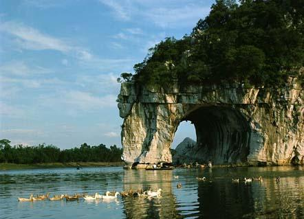
这是老城时代的象山景象，在我小的时候还能见到。随着老城的改造，各种洋派的、人造的东西被施加于这座曾经是中国最有特色的历史文化和风景旅游名城，桂林老城的天然风韵逐步在散失。看到新闻里对旧城改造的报道，总想起梁思成先生那些伤感的话：“一个东方老国的城市建筑，如果完全失掉自己的艺术特性，在文化表现及观瞻方面都是大可痛心的。因为这事实明显的代表着我们的文化在衰落，乃至趋于消灭的现象。”
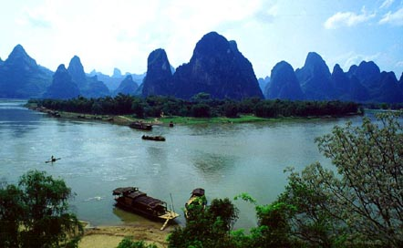
桂林的居民有一部分是以船为家的，小的时候曾经很羡慕那些家就是船，船就是家的同学，总以为他们只要愿意，就能解缆到下游去，到我们从未见过的下游的新世界去。儿童和少年的心理，总归是好奇，他们真的能“随心所欲的解缆到下游去”吗？
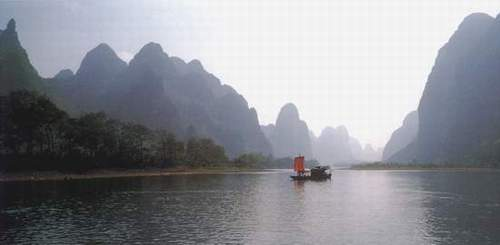
从来都认为乘船在漓江上慢慢漂流才是最有其真趣味的，可惜漓江上往来的机动游船，千篇一律是强迫游客走马观花的。如果为日程宽松的游人安排些人力的木船，象自称“青藤门下走狗”的那位有趣的袁枚袁子才老先生那样，让船在青山顶上缓行，细数江中游鱼，那是多好！
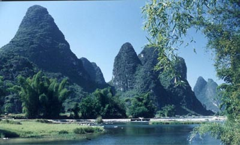
漓江上常常可以看到带着鱼鹰的捕鱼人，有时候鱼鹰张开翅膀在江面上平飞，有时又一猛子扎入水中，带出一条大鱼。撑竹排的高手，让人能感受到的，真的就是离弦之箭的感觉。我的一位表兄，曾是此中好手，可惜已经上岸多年了。
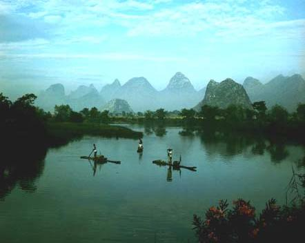
漓江两岸的凤尾竹总是垂着头，随风而摇曳，好似温柔含羞的娉婷少女，纵使走到天涯海角，你的身影也将永在我的心底。二十二岁的时候，离开了你，人生百岁, 七十者稀，人生一世,也只不过是宇宙中的瞬间。短暂别离后，终有长久相聚时，山水之魂魄，吾将携以传之远方。